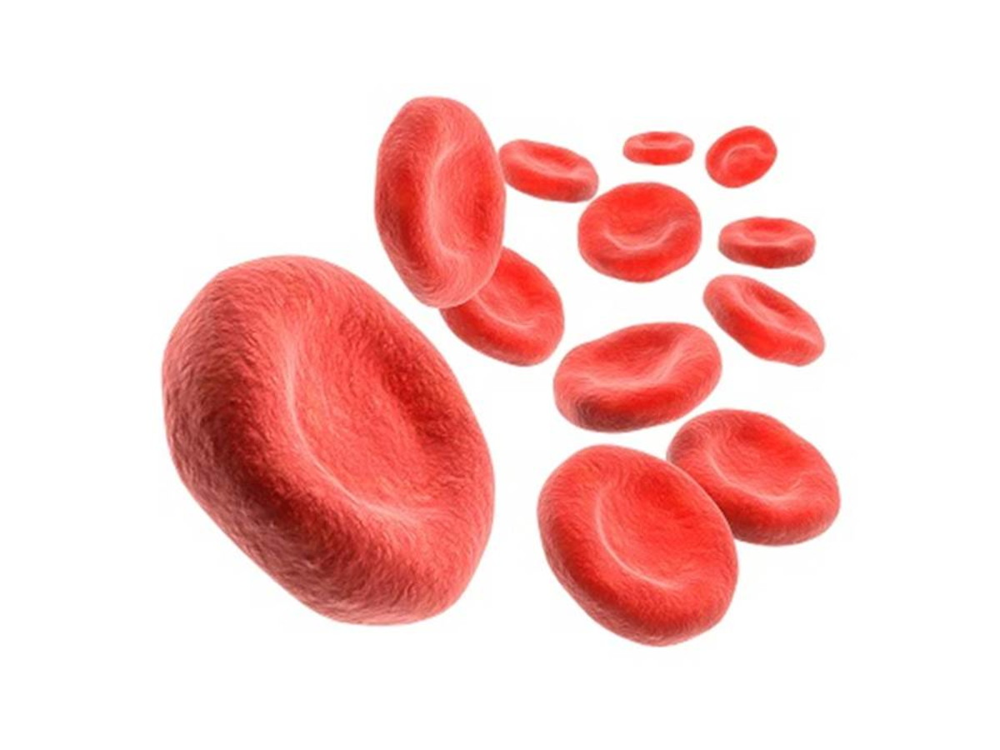

- Introdução

As hemácias são células arredondadas com o formato de um disco bicôncavo, que apresentam cerca de 7,5 µm de diâmetro e 2,6 µm de espessura na região periférica e cerca de 0,8 µm na região central, facilitando a troca e o transporte dos gases. Elas também apresentam a ausência de um núcleo em sua estrutura. Portanto, isso significa que as hemácias não têm a presença de um material genético, por essa característica elas acabam tendo um tempo de vida relativamente curto (120 dias) e são incapazes de se dividirem.
Mas as funções atribuídas às hemácias só são possíveis graças à hemoglobina que é uma substância encontrada no interior da célula que é formada por uma porção proteica e uma porção com ferro. Além disso, as hemácias não têm outra organela intracelular, porque elas são perdidas durante a eritropoiese. As duas únicas estruturas deixadas são o citoplasma e a membrana celular que o reveste.
- Hemoglobina

Como já sabemos, as hemácias podem ser chamadas de glóbulos vermelhos ou hemoglobina, mas isso só é possível porque elas tem em sua estrutura hemoglobina e globulina. A hemoglobina é uma proteína globular com estrutura quaternária que apresenta quatro subunidades polipeptídicas, ela é uma proteína vermelha que contém ferro e é considerada a principal proteína intracelular das hemácias, sua função é transportar oxigênio no sangue.As subunidade de polipeptídeos são chamadas de cadeias de globina. Existem quatro tipos de cadeias de globinas (α, β, γ e δ) que podem dar origem a três classes principais de hemoglobina: HbA, HbA2 e HbF. De longe, a forma mais prevalente em adultos é a HbA. Cada globina possui um átomo de ferro ligado a uma molécula heme. O ferro é que se liga aos gases, de forma que cada hemoglobina pode transportar até quatro moléculas de oxigênio ou gás carbônico. Sua principal função é transportar o oxigênio dos pulmões para os tecidos do corpo humano e, ao mesmo tempo, transportar o dióxido de carbono dos tecidos para os pulmões, onde ele será eliminado.
Grupo HEME: O grupo prostético heme confere a estas proteínas uma cor característica, e é constituído por uma parte orgânica e um átomo de ferro, no estado ferroso [Fe(II)]. Esse grupo faz parte da constituição de muitas substâncias essenciais, incluindo dos citocromos, da mioglobina e hemoglobina.
Globina: É grupo de proteínas globulares que contém um grupo heme, capazes de transportar oxigênio e outros gases- Entendendo a fundo

Sabemos que existem diversos tipos de globinas, sendo que a hemoglobina é formada por duas globinas alfa e duas globinas não alfa. E o grupo heme tem um átomo de ferro que se liga ao oxigênio para que possa ser transportado até ser liberado nos tecidos. Como já foi dito, o grupo heme é o responsável pela coloração vermelha da hemoglobina e, por isso, do sangue, porque essa proteína está presente em grande quantidade nas hemácias.

- Hemoglobina